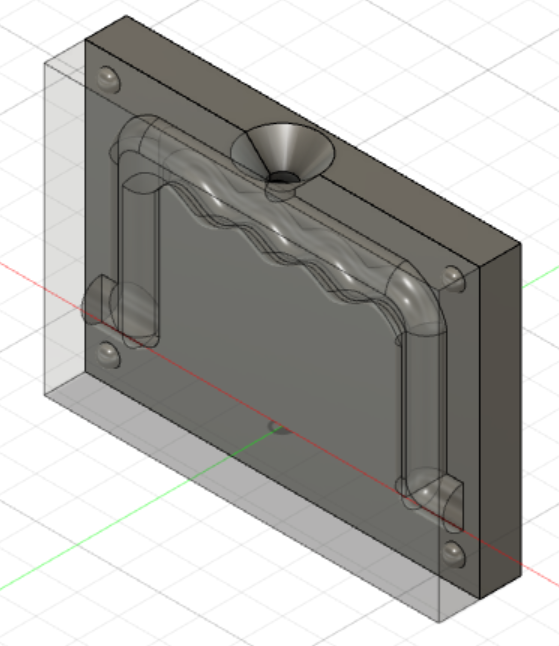

Molding and casting
Project 5
Project Description
This is a part of the final project which Halldór and I are working on together. This is the process of making a handle for our briefcase by using molding and casting. For this project we should make a negative silicone mold which is casted from the positive mold which is milled from a 100x100x50mm wax stock. Then the silicone mold is casted with some suitable material, for example resin to make the positive of the object. Due to external factors (Covid-19 and time contraints) it is satisfactory to only create the design files for the milling operation and a simulation video of the milling.
Preface
Before I started the design of the briefcase handle I took a look at some designs of briefcase handles on the Internet. The most common one is a handle with two horizontal holes which fit with somekind of mounting that is difficult to purchase (at least if you don't know the business):
It would be difficult to get this kind of a mount and I realised that making a horizontal hole would be impossible with this manufactoring process. Therefor I tried to think of another solution. One that would be feasible is a handle with cylinder like pins on both sides that would fit under this mount I bought:
As mentioned above the physical mold and cast was not made, only the design files for the milling of the two positive molds of the briefcase handle. Below is the documentation.
Molding and casting
For this project I used Fusion 360 for the design of the handle and the creation of the two positive molds, and the CAM feature in Fusion 360 for generating toolpaths.
1. Design of handle
The main design constraint for this handle is the size of the wax stock we can make our mold from, 100x100x50mm. A typical handle would be somewhere near 130x50x20mm in size to be able to fit into your hand. Additionally I needed to add some material on both ends of the handle for the mounting system. But you have to work with what you got, so I just scaled it down a little bit so it would probably fit well into hands of childrens.
I drew a simple handle in Fusion 360. It is just a simple rectangular tube with a spline to fit into your fingers:
Then I extruded it and added a fillet on most of the edges so it would be nearly cylindrical. Finally I extruded cylinder tabs of both sides of the handle for the mounting. The tabs could only be 4mm each because of lack of space.

2. Creating double negatives
Next step is to create the double negatives who will ultimately result in the two positive molds I will mill. For this part I watched these two videos: https://www.youtube.com/watch?v=vKZx9eHEL6o&t and https://www.youtube.com/watch?v=KBAp1XE9tB0.
The handle is symmetrical with one axis, so in theory I could only mill one positive mold and then create two negative silcone molds from that mold. The only problem with that strategy, is in order to keep both silicone molds aligned, keys are often added so they are always in place. For that reason I decided it would be sensible to mill two positive molds rather than one.
To create the double negatives I began to create a box that would cover the handle. This box should be the same size as the material you are going to cut with the milling machine. Therefor you will need to have a few things in mind when creating it. For my purpose I would need to keep a little extra space in the XY-plane to make a "bowl" because silicone will eventually be poured into the positive mold, and a little extra space for the keys to keep the molds aligned. Also, in order to not waist time when milling, the heigth of the box (Z-axis) should not be much larger than your object. Although keep in mind that I will add a hole later that the resin will be poured through, so adjust your heigth to the size of that hole.
The box I created is 96x70x20mm. Remember when extruding the box to create a new body.
Next I used the combine command to cut the positive handle inside the box so it would create a negative of the handle. The box was then cut into two halves to create the double negative:
Keys where added along with the hole to pour the resin. The double negative is now finished:
3. Creating two positive molds
The only thing left before the toolpaths are created is to create two 100x100x50mm wax stocks around the two double negatives, and then use the combine command to create the stock with the positive mold carved into. The only thing to keep in mind when creating the stock is to set the bottom of the negative mold at the top of the stock, so we will not waiste time milling something unnecessary. This photo should show what I'm talking about:
When you have used the combine command the two positive molds should look like this:

4. Toolpaths
The toolpaths where created in the manufacture workspace inside of Fusion 360.
Prior to this I had no experience with CAM, neither in Fusion nor any other CAM software. The only thing I knew was that I needed to create roughing and finishing toolpaths. I watched some videos to get started: https://www.youtube.com/watch?v=whGKwsEY4Vo, https://www.youtube.com/watch?v=Bd6-BQUCbVA and https://www.youtube.com/watch?v=iqnvzxuXFTQ. These videos only got me started, but I recommend just to experiment with the diffrent toolpaths Fusion 360 has to offer and see visually by simulating the removal of the material from the stock how they are performing.
I began by defining the stock material, setting the origin in some sensible place and orient the axis. You will need to remember to orient the axis the same way as the milling machine is orientated, but I don't know what machine I will be using so it is likely you will need to change the orientation and generate the G-code again.
Before you decide what toolpaths you will use, selecting a good tool for your operation is crucial. I had learned that flat end tools are good for flat surfaces and when removing a lot of material and other general milling actions, and ball end are more suitable when milling 3D curves such as fillets. Beforehand I knew that these tools could not exceed 3.5mm in diameter in order to fit in some places, as seen in this figue:
I could accsess both flat end (2 flutes) and ball end (3 flutes) tools with diameter 3.175mm at Fablab Reykjavík, so I added them inside of Fusion 360 by listing their dimensions:
After some experimentation with diffrent toolpaths and help from Arnar at Fablab I found roughing and fininshing toolpaths that where good for me:
Roughing:
- 3D Pocket with the flat end tool (1mm depth per pass) to clear most of the material from the stock and create rough edges on the handle:
Finishing:
- 3D Paralell pass in 0 degrees (0.5mm per pass) with the ball end tool to create the fine 3D curves of the handle:
- 3D Paralell pass in 90 degrees (0.5mm per pass) with the ball end tool to create the fine 3D curves of the handle:
The final outcome will look something like this:

This is fine enough for my purpose. It is always possible to make the mold even finer but that requires much more milling time, you could for example use a finer tool or make more passes with the milling machine.
The second mold, which is almost identical to the first one, is milled the exact same way. The final outcome will be something like this:
The only thing left is to adjust the feeds and speeds accordingly to the tools I will use and the stock material (wax). I used this website to calculate the spindle RPM, XY feedrate and plunge feedrate:
I feel like these values, especially the spindle RPM, are a bit low. I checked other sources and one of them gave me these values for a 3.175mm flat end tool milling into wax:
If I where to actually mill the two postivive molds I would consult with someone at Fablab before doing so, just to be safe. But for the time being I used the feeds and speeds values from the original source.
It is recommended to set these feeds and speeds values for each tool inside of the tool library, instead of changing them for each milling operation.
The total milling time for each positive mold is about 3 hours. If some feeds and speeds values are changed the time could decrease significantly.
A sped up simulation of the two positive molds can be seen down below:
5. G-code
Next step would be to generate the G-code the milling machine will use as instructions. Because I will not be milling the physical product and I'm not sure which machine we would be using I will just set the Shopbot as the machine and thus saving the G-code file as an .sbp file.
Afterthoughts
For the briefcase to work we would need the handle, so it would have been fun to create the physical product. Maybe I will finish it another time. Overall I think this project went pretty well.
Workload
- 1 hour: Thinking about the design
- 2 hours: Finding a mount for the handle
- 1 hour: Model the handle in Fusion 360
- 4 hours: Creating the two positive molds in Fusion 360
- 3 hours: Creating toolpaths
- 6 hours: Documentation
- 17 hours: Total
Design files
Press here to download the Fusion 360 design files with modelling and toolpahts, and the G-codes for the Shopbot.
Search engine key words
briefcase handle - molding and casting - double negative - fusion 360 toolpaths - feeds and speeds - cut depth - fusion 360 cam simulation video - g-code